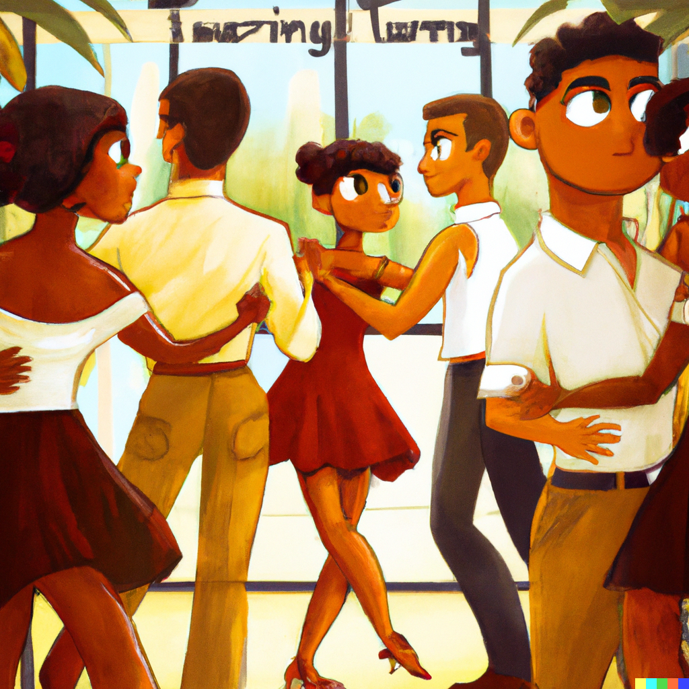
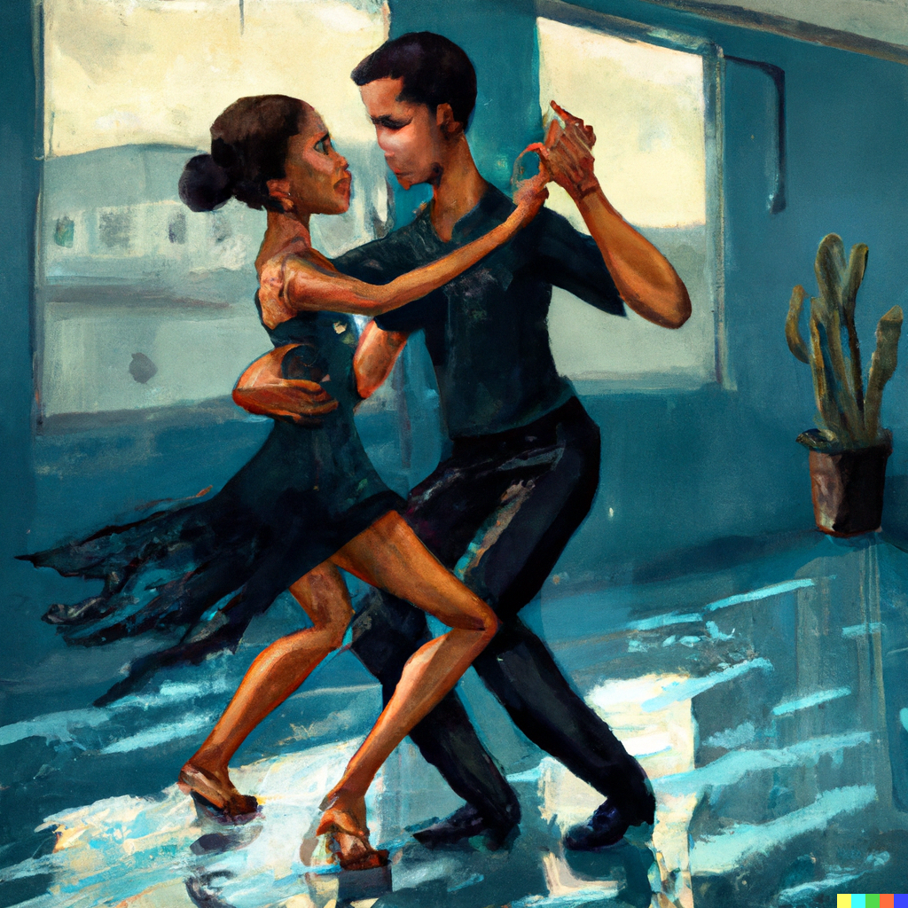
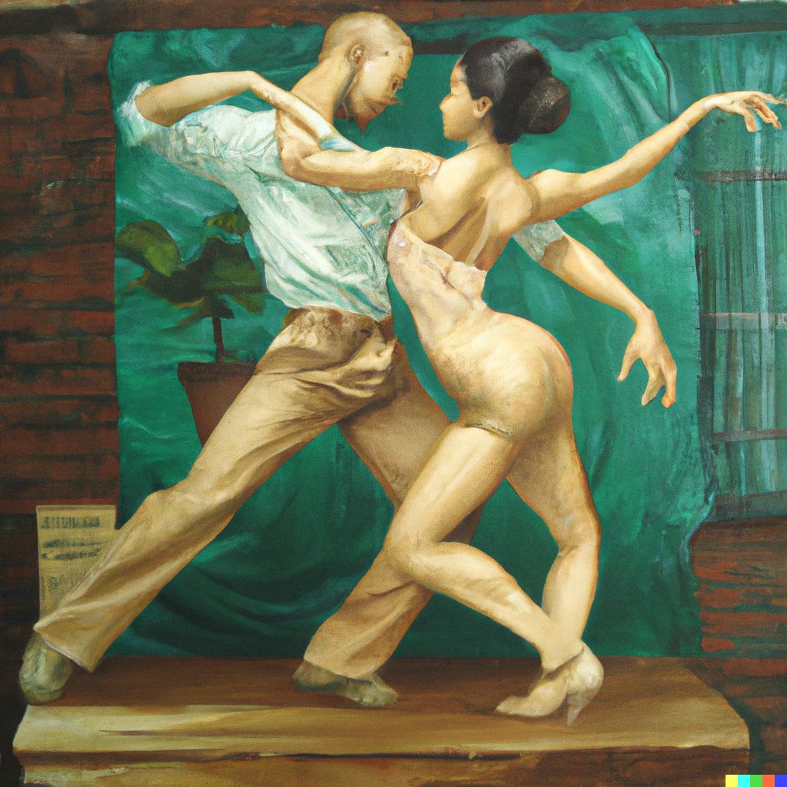
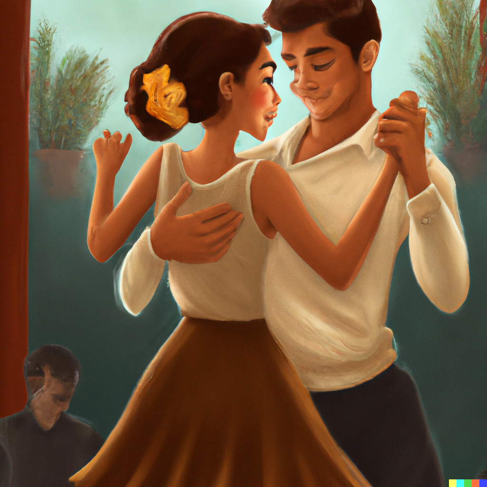

Sensual Bachata Learning Lab
New and exciting learning format

Sundays, 4 PM
Ripley Grier
(Midtown NYC)
What is a Learning Lab?
A Learning Lab is a unique learning experience that pairs students with asymmetric skill levels, a more beginning student with a more advanced student. The advanced student will guide the beginner through a specific mini-lesson, providing hands-on instruction and feedback. Unlike traditional group classes that spend a lot of time on demonstrations and explanations, a Learning Lab offers personalized instruction in an one-on-one setting, allowing you to progress at your own pace and tailor the mini-lessons to your needs and interests. Plus, the act of teaching helps deepen your understanding of the material and boost your self-esteem. Say goodbye to frustration and hello to a more exciting and engaging way to learn.

Sensual Bachata
Sensual Bachata is a sensual and intimate dance style that combines traditional bachata's intricate footwork and salsa's turn patterns. It's characterized by its sensual and fluid movements, also known as corporal movements, that are led in an improvised way. This allows for a wide range of expression and improvisation, making it a unique and personal experience. The connection between partners and the music is also emphasized, which makes it an exhilarating and empowering experience. Whether you're a beginner or an advanced dancer, Sensual Bachata is a perfect way to express yourself, let go and immerse yourself in the moment. Join a Sensual Bachata learning lab today and discover the beauty and passion of this dance style.

Movement-Based Curriculum
Are you tired of the same old choreography-based Sensual Bachata classes? Our movement-based curriculum is the perfect alternative. Instead of just learning pre-determined steps, our classes focus on developing your movement technique and motor function. This approach will help you create a strong foundation for your dance skills, making your movements look elegant and effortless, instead of clunky and unrefined. Good body movement in dance is characterized by fluidity, grace, and control, which is achieved through our focus on movement technique, rather than just memorizing choreography. Join our movement-based curriculum and take your Sensual Bachata skills to the next level.

About
Introducing Thomas Fischer and Alyssa Malgapo, expert instructors and creators of the Learning Lab approach for sensual bachata in NYC. With Thomas' extensive background in dancing, including co-creating the Learning Lab method for Argentine Tango with Mitra Martin, and his personal experience with a broken neck, he is able to provide specialized instruction for dancers with physical limitations. Alyssa's background in Hawaiian dance and yoga instruction brings an added dimension to the team. Together, they offer a unique and effective way to improve your sensual bachata skills through personalized, hands-on instruction in a one-on-one setting. Join their Learning Lab and take your dancing to the next level.
How to Prepare
Get your Eventbrite ticket!
Look out for an e-mail the day off with the address and room number. (Ripley Grier has two different locations close by each other.)
Bring shoes in which you can turn well.
Create an account in our web app to see the curriculum and track your progress: https://learninglab.fans
